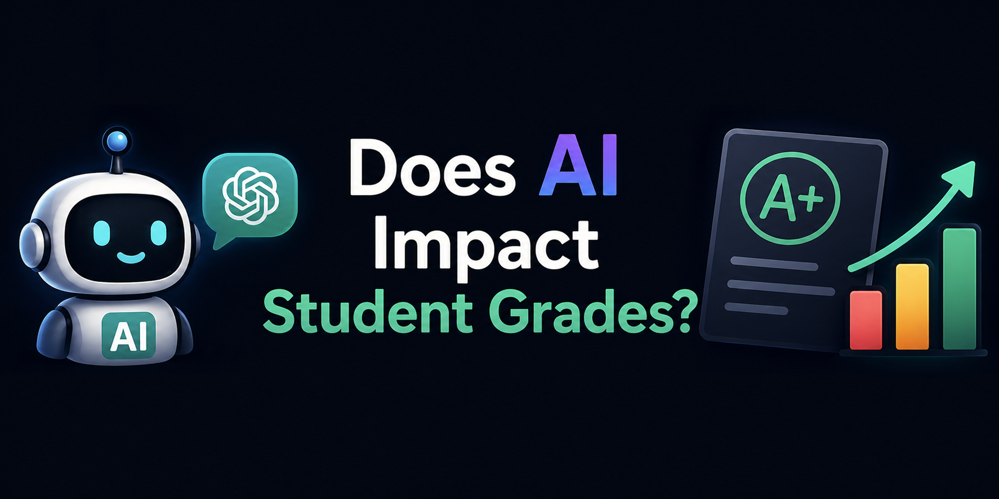

AI Impact on Students' Success
This project analyzes how AI tools affect student academic performance using a dataset of 400 students. It explores whether factors like AI tool choice, daily usage time, purpose, age, and satisfaction level are related to grade outcomes.
More details
Problem
As students increasingly use tools like ChatGPT, Gemini, Copilot, Grammarly, and Notion AI, it is important to understand whether AI helps or hurts academic performance. The project investigates whether AI usage patterns can explain or predict whether a student’s grades improve, slightly decline, or stay the same.
Approach
I performed exploratory data analysis to understand student demographics, AI tool usage, daily usage hours, purposes for using AI, and reported grade impact. Then I preprocessed the data by encoding categorical variables, scaling numeric features, splitting the data into training and testing sets, and testing classification models including logistic regression and a random forest classifier.
Results & Impact
The logistic regression model achieved about 30% accuracy, which suggests the available features were not strong predictors of grade impact. The random forest model showed that daily usage hours, age, and satisfaction level were the most important features, but their importance scores were still relatively low, indicating that the dataset may not contain enough information to reliably predict how AI affects student grades.